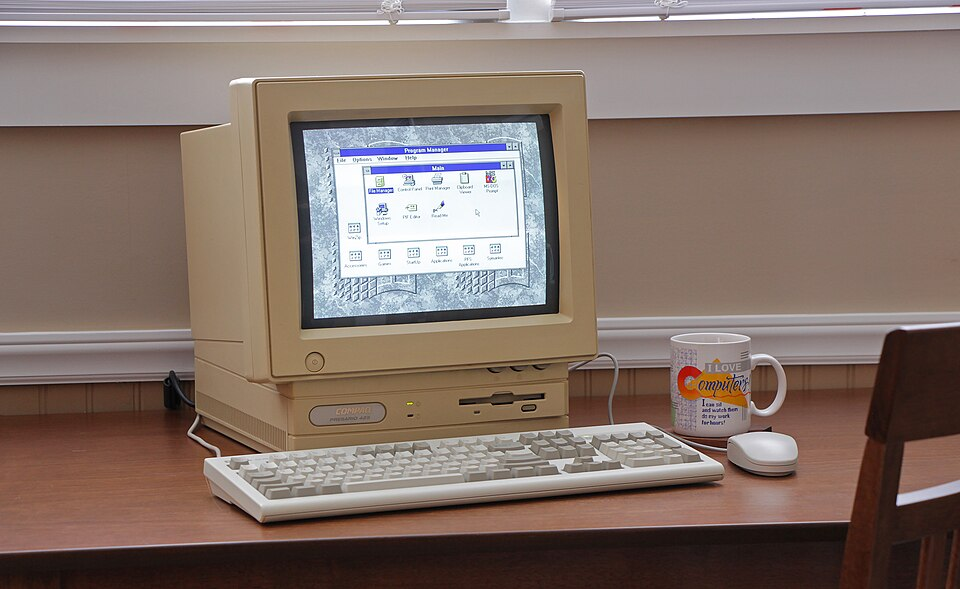
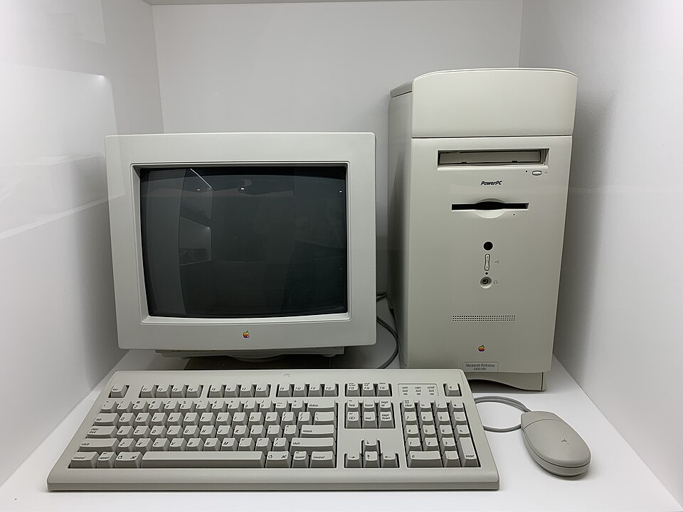
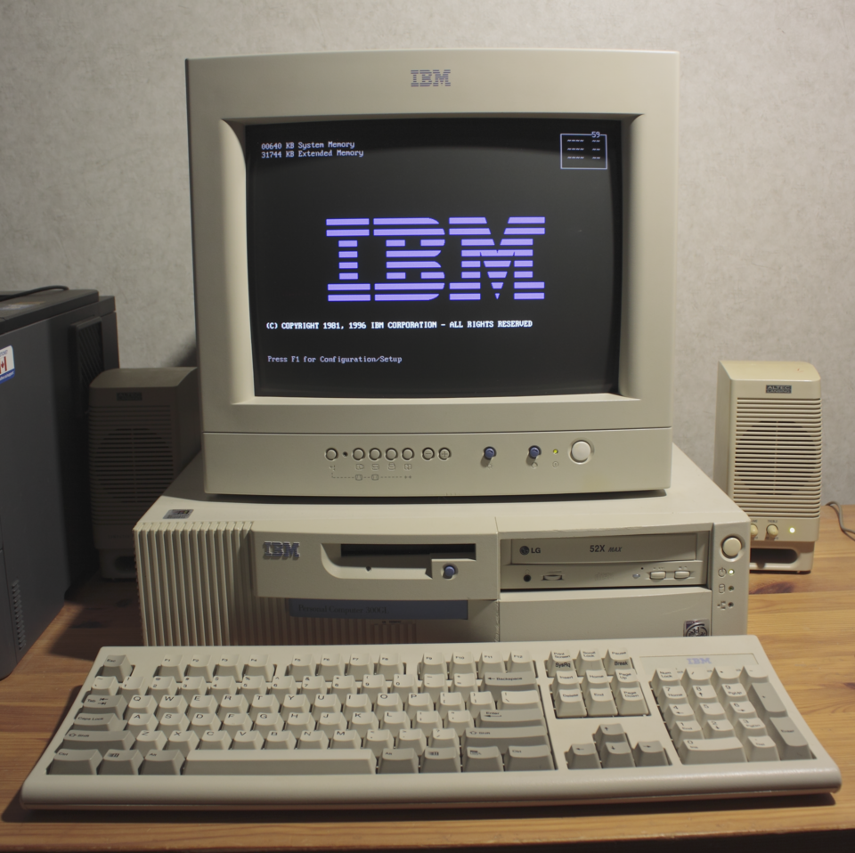

Compaq Presario 425 (1993)
Una opción muy popular entre estudiantes y hogares. Incluía un procesador Intel 486SX, ideal para tareas básicas y juegos livianos. Su diseño todo-en-uno integraba monitor y CPU en una sola unidad. Venía con MS-DOS y Windows 3.1 preinstalado, facilitando su uso. Compaq ofrecía soporte técnico sencillo y manuales pensados para principiantes.
Credit: Wikimedia Commons - phreakindee
Apple Macintosh Performa 6400 (1996)
Una computadora orientada al usuario doméstico, con diseño compacto y elegante. Incluía procesadores PowerPC y venía con Mac OS 7 u 8 preinstalado. Era ideal para tareas multimedia como edición de audio y video casero. Contaba con ranuras de expansión que permitían mejorar sus capacidades. Fue una de las más accesibles dentro del ecosistema Apple en los 90.
Credit: Wikimedia Commons - Benoît Prieur
IBM Personal Computer 300GL (1997)
La IBM 300GL fue una PC de escritorio muy popular en oficinas y hogares. Contaba con procesadores Intel Pentium MMX o Pentium II, según la versión. Destacaba por su fiabilidad, ideal para software de productividad como WordPerfect o Lotus. Su diseño sobrio la hacía encajar perfectamente en ambientes laborales. Fue una de las últimas grandes apuestas de IBM en el mercado de PCs personales.
Credit: Wikimedia Commons - Pirozhkebab